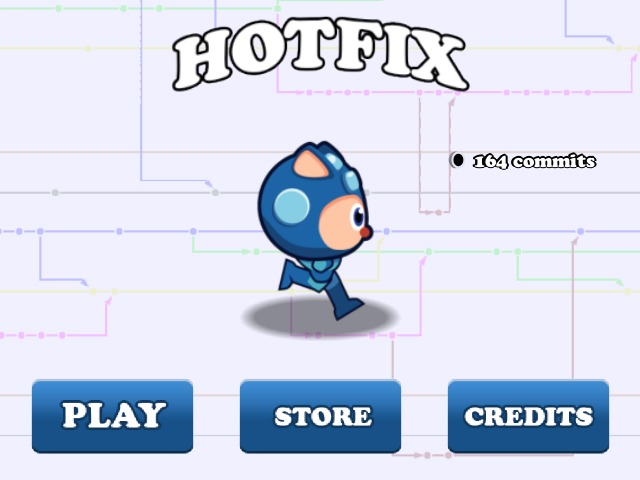
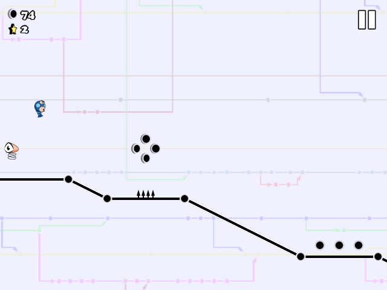
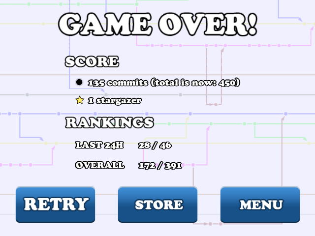

Description
Help Hotfix collect stargazers and avoid enemies. Collect commits to upgrade hotfix and add new features.
Controls
Click or press space to jump. The longer you hold, the longer the jump (there is a upper threshold of course).
Jumping watchers can be destroyed by jumping on them. If you do so, you will be able to double jump.
By collecting commits, add new features to hotfix. The more features you have, the more likely you will progress in the game.
Snapshots
Menu
Beginning of the game
Game over screen
You are ranked by the number of stargazers you collected.
The store

Buy new features for Hotfix.
Enemies and obstacles
Poisonned forks
Round forks
Jumping watchers
You are dead if you touch them, unless you jump on them. If you do so, you will be able to double jump.
Forker watchers
Features
Clones
Time machine
Extra jumps
Magnet

Credits
Developper / designer / author of Hotfix
Sébastien Drouyer Follow @sdrdis
Frameworks
Using free versions of Unity3d and the Orthello framework.
Musics
The Gateway By klez
The FutureMan Can By Kangaroo MusiQue
Sounds
Hurt, Pad, and stargazer sound : Sébastien Drouyer
Clone: game pick up object By fins
Falling: fall2 By silversatyr
Flick: Flick_ff-2_003 By batchku
Jump: sound_jump By odeean
License
Code and images by Sébastien Drouyer are under MIT licence.
All other artworks not created by Sébastien Drouyer can be under specific license (non-commercial notably). Click the links in order to check the license.